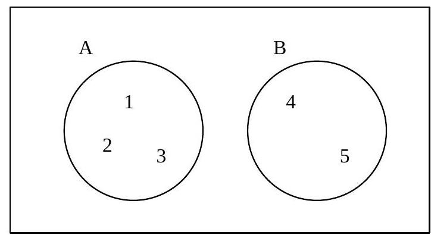

Chapter 4 : Set Notation Representation And Probability
Chapter Objectives
At the completion of this chapter, you should understand:
- the logical requirements of a set;
- how to enumerate and specify sets;
- the use of Venn diagrams;
- problem solving;
- relations between sets;
- that in real life problems, we have to cope with likelihood and not 100% certainty. Probability model allows us to evaluate the chances or likelihood;
- probability and know the valid range of values of a probability;
- Venn Diagram as probability space;
- and find probability of combined events;
- and use tree diagrams to depict all possible outcomes in a program, it helps in determining the probability of relevant event.
4.1 Introduction
Many real life problems can be analysed further as some collection of objects, each collection of objects may have logical relationship with another. This chapter will tell us how sets and Venn diagrams can be used to solve real life problems.
4.2 Definition of Set
A set is a collection of objects, things or symbols, for instance, numbers, names of people, colours etc.
The individual objects in a set are called elements or members of the set. All the members of the set have a common feature, which links them in some way.
The elements in a set must be unique.
4.3 Notation
To identify specific sets, we may either give them names, or just using capital letters.
For example:
Take set E as an example, we know that July is a member of E, while Tuesday is not a member of E. We therefore abbreviate the phrase "is a member of" by using the Greek letter epsilon, $\in$, and $\notin$, to denote "is not a member of".
As for the above examples, we may write CAT $\in$ C, July $\in$ E, but Tuesday $\notin$ E.
4.4 Venn Diagrams
We have learned two methods of expressing a set:
- By listing the elements within brackets, { }.
- By specifying the main characteristics of the set.
Beside these two ways, we can also use diagram, Venn Diagram. Usually a rectangle is used to denote the universal set U.
For example, $U = \{1, 2, 3, 4, 5\}, A = \{1, 2, 3\}$ and $B = \{4, 5\}$ then the Venn Diagram is:
U
Figure 4-1